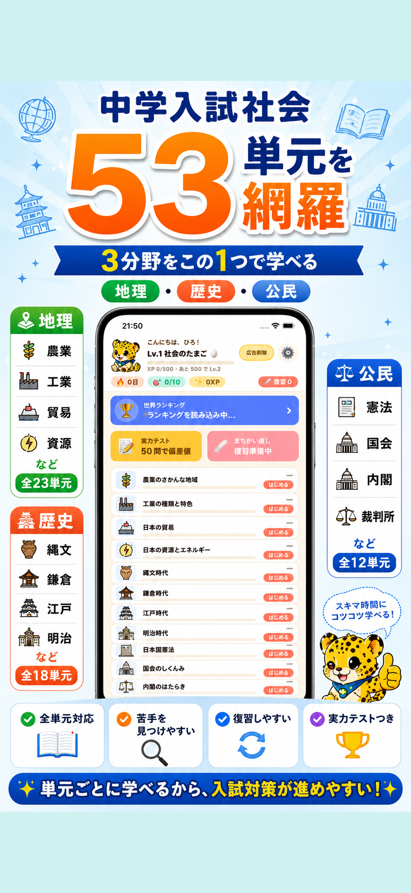
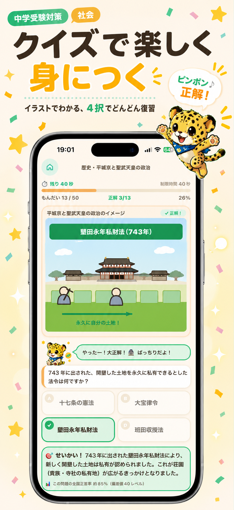
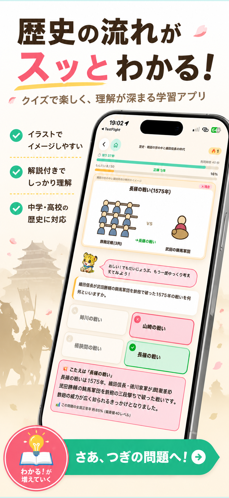
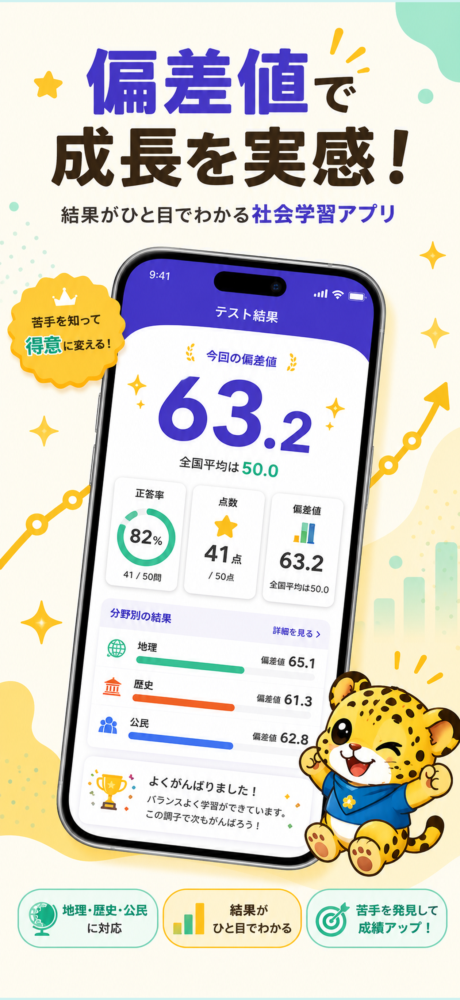
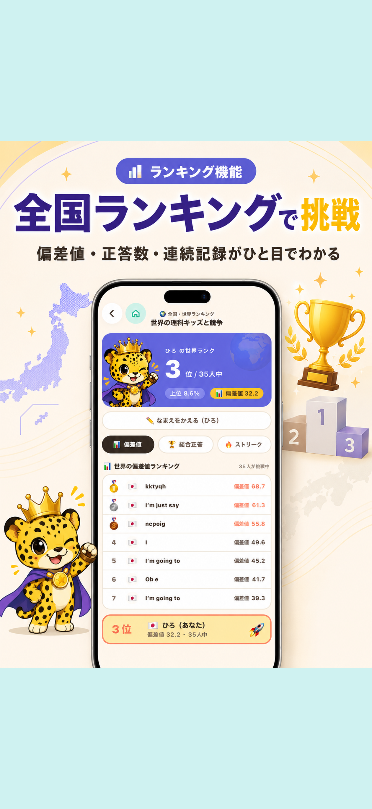

中学受験社会を、地理・歴史・公民まで一気に対策
地理・歴史・公民の重要単元を、4択クイズとイラスト解説で効率よく学習。苦手分析、偏差値、全国ランキングで、入試に必要な知識を楽しく積み上げます。

「覚えるだけ」で終わらせない。理解して、確認して、成長を実感できる仕組みです。
地理・歴史・公民の3分野を、この1本でまるごと対策。入試頻出の重要単元を網羅しています。
テンポよく答えて知識を確認。通学中や寝る前の5分でも、着実に積み上がります。
歴史の流れや地理のポイントをイラストで解説。丸暗記ではなくイメージで定着します。
実力テストで偏差値がわかり、苦手単元は自動で見える化。全国ランキングで成長を実感。




地理・歴史・公民から、学びたい単元を選択。ロードマップで進捗もひと目でわかります。
テンポよく問題を解いて、イラスト解説で理解を深めます。
まちがえた問題を復習し、実力テストで偏差値と全国順位をチェック。
無料でダウンロードしてお使いいただけます。広告の削除などの一部機能はアプリ内課金でご利用いただけます。
中学受験をめざす小学生のための構成ですが、社会の基礎を固めたい中学生や、学び直しをしたい大人の方にもお使いいただけます。
iPhone・iPad（iOS）と Android スマートフォン・タブレットに対応しています。
地理・歴史・公民の3分野・53単元を収録。4択クイズ、イラスト解説、復習機能、実力テスト（偏差値）、全国ランキングをお使いいただけます。
trailfusionai@gmail.com までお気軽にご連絡ください。